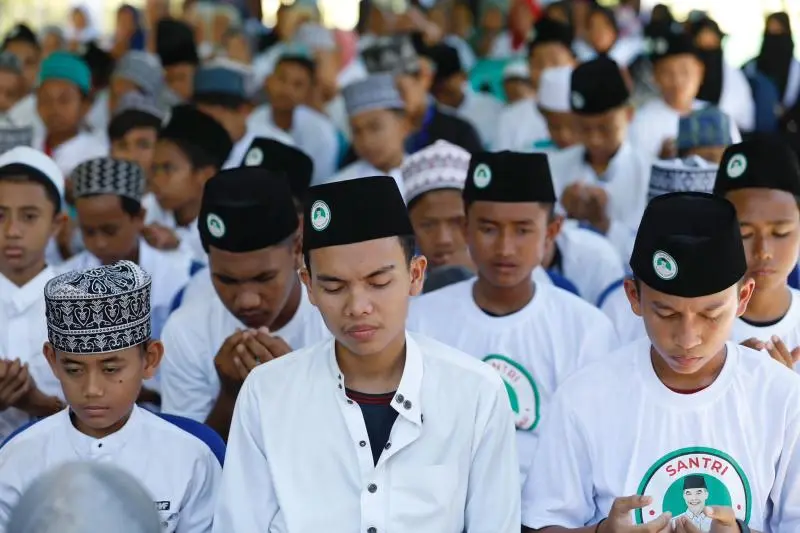

Kota Santri
Pekalongan, sebagai kota santri, memiliki banyak nilai budaya dan tradisi yang kaya. Kami berkomitmen untuk melestarikan kearifan lokal melalui berbagai kegiatan dan karya seni.
Busana Muslim Pekalongan adalah salah satu contoh nyata dari kearifan lokal yang mencerminkan keindahan dan nilai-nilai spiritual.
Pekalongan telah lama dikenal sebagai Kota Batik dan menjadi salah satu pusat produksi batik. Daerah ini kerap pula mendapat predikat sebagai Kota Santri karena lebih dari 100 pondok pesantren tersebar di daerah ini. Selain itu, wilayah yang membentang jauh dari utara ke selatan ini berpotensi pula di sektor industri, pertanian, dan perdagangan.
Galeri Kearifan Lokal
